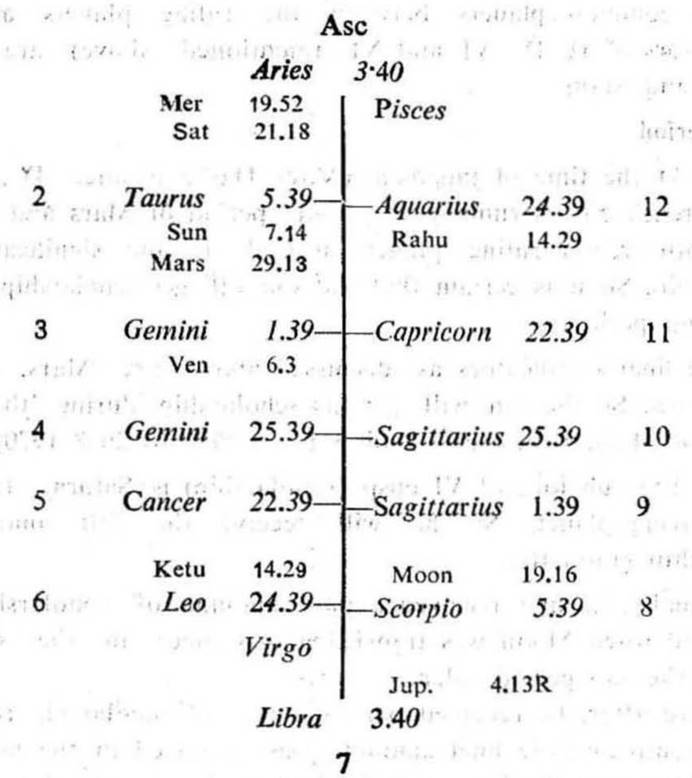
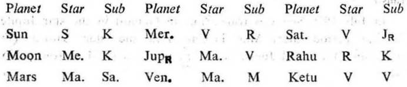
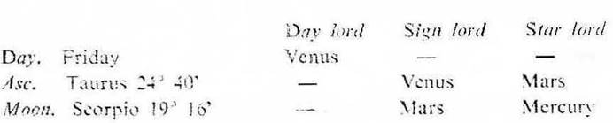
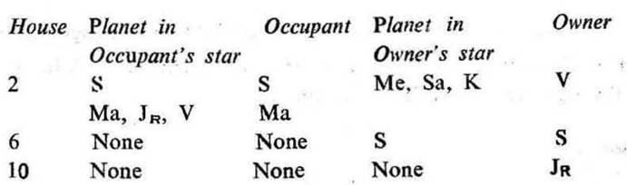

Question. When shall I get a job?
Number. 4 (out of 249)
Place of Judgment. 23°N 2′, 72°E 35′
Time of Judgment. 22-5-1970, Friday; 7-15 A.M. I.S.T.


If the cuspal sub lord of the 6th or 10th be the significator of 2, 6 or 10 service or earning is promised during the joint period of the significators of 2, 6 and 10.
In this horary map Moon is aspected by the occupants of the 2nd (Sun and Mars) and the owner of the 6th (Sun). Thus Moon clearly indicates that the query refers to service or job for money.
Cusps 2, 6 & 10th. The sub lord of the 2nd, 6th and 10th cusps is Mercury. It is direct in motion. Its star lord Venus owning 2 is also direct in motion. So Mercury is the significator of 2. Hence service will be promised soon to the querent because Mercury is a fast moving planet.
Cusp 11th The sub lord of the 11th cusp is Venus. It is direct in motion. Its star lord Mars the occupant of the 2nd is also direct. So Venus is the significator of 2. Hence the querent’s desire will be fulfilled soon because Venus is a fast moving planet.

None of them is in the star or sub of a retrograde planet. Mars aspects Ketu, so Ketu represents Mars. Thus the ruling planets are Mercury, Venus and Ketu.

Ketu in Leo represents Sun, so take Ketu in stead of Sun.
The common planets between the ruling planets and the significators are Mercury, Venus and Ketu.
In this case Ketu is a significator and is only considered as a ruling planet (representing Mars); while Mercury and Venus are the significators, the ruling planets and also the cuspal sub lords of the houses 2, 6, 10 and 11. So Mercury and Venus may be considered as the final significators.
At the time of judgment (Mercury Dasha balance 13Y 8M 7D) the querent is running the joint period of Mercury and Ketu. The sub period of Venus will commence from 23-6-1970.
So the querent will get service during the joint period of Mercury, Venus, Venus and Venus at the earliest i.e. between 23-6-1970 and 21-7-1970. The reason is that both are connected with the 2nd, 6th, 10th and 11th cusps; both are the ruling planets and both are fast moving planets.
The querent got his first service on 10-7-1970 when Sun was transitting in Gemini 24° 0′ in the sub Mercury (the period ruler); Moon in Virgo 6° 0′ in the sub Mercury; and Mercury in Gemini 27° 0′ in the sub Venus (the sub, inter d sookhmana period ruler).